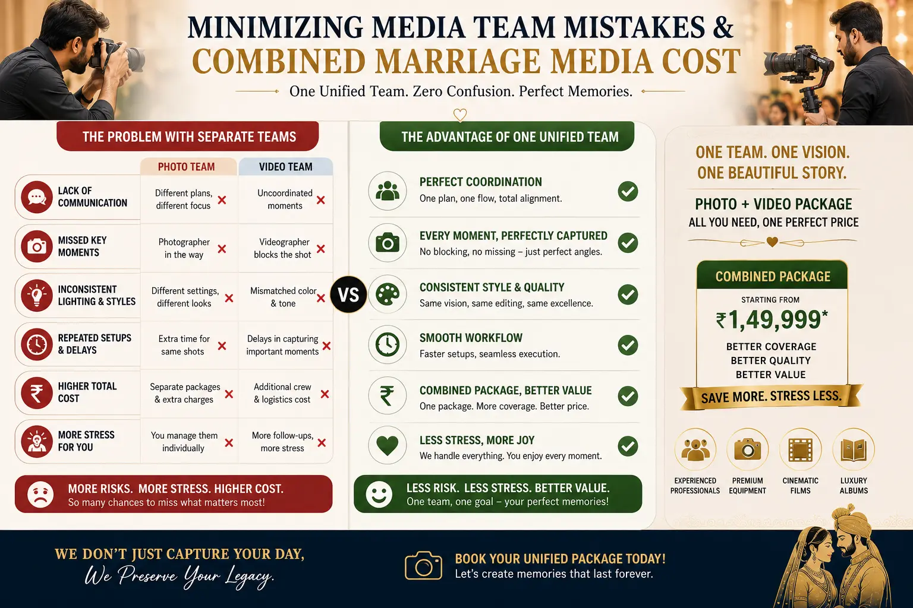

Why Separate Photo and Video Vendors Secretly Double Your Wedding Day Stress
The Hidden Conflict of Uncoordinated Crews
When planning a wedding, couples often look for the **best wedding photography near me** to capture their memories, and then separately hire a specialized video team. On paper, choosing two independent boutique vendors seems like the best way to get top-tier results in both formats. In reality, this approach often introduces silent friction on the wedding day.
Without a shared coordinator, separate photo and video teams have competing priorities. Photographers need the couple to freeze for posed frames, while videographers require movement to tell a dynamic story. This mismatch often leads to **wedding media coordination mistakes**, where teams block each other's sightlines, crowd the couple, and slow down the event timeline.
By choosing a unified **photographer and videographer package**, couples ensure their visual teams operate under a single creative lead. A coordinated crew works together, sharing space, lighting gear, and shot lists, which helps in **minimizing media team mistakes** and creating a relaxed environment on your big day.
How Coordinated Crews Manage Space and Light
A coordinated visual team utilizes **unified wedding media services** to share resources and synchronize their captures:
- Shared lighting setups. Uncoordinated teams often bring separate flash and continuous lighting gear, creating conflicting color casts. A unified team uses shared lighting that works for both high-resolution photos and cinema-grade video.
- Synchronized positioning. During critical rituals like the muhurtham, a unified team assigns specific camera locations to ensure **multi-camera wedding coverage** does not result in operators blocking each other's views.
- Coordinated timelines. A single director coordinates the couple's portrait sessions, allowing both photo and video teams to capture their requirements within the same time window.
- Unified post-production. Processing files under a single team ensures consistent color grading across both wedding albums and the final cinematic film.
Reduced Stress
Working with a single creative lead allows the couple to focus on the celebration rather than managing competing vendor requirements.
Consistent Style
A unified editing pipeline ensures that the visual style and color palettes match across your printed albums and digital film.
Cost Efficiency
Opting for a bundled media solution reduces the overall **combined marriage media cost** by streamlining travel, gear, and crew logistics.
Zero Delivery Delays
Unified file management prevents post-production backlogs, ensuring your wedding assets are delivered on time.
The Advantages of Bundled Media Solutions
Hiring an **elite camera crew for couples** through a unified agency offers structural advantages over piecemeal booking:
Production Planning
- A single pre-wedding consultation covers both photo and video timelines.
- One master shot list prevents duplicate poses and visual fatigue.
- Clear crew assignments keep everyone working in sync during key ceremonies.
On-Site Teamwork
- Crews communicate via synchronized earpieces to stay out of each other's frames.
- On-site data managers back up all media cards to a single secure server.
- Combined lighting gear keeps the stage clean and uncluttered.
Post-Production Quality
- Shared color LUTs ensure consistent color profiles between video and photos.
- Production coordinators streamline delivery timelines.
- Client feedback is handled through a single project manager.

Conclusion
Hiring separate photography and videography vendors often introduces unnecessary complexity. A coordinated **photographer and videographer package** provides the unified approach needed for **minimizing media team mistakes** and reducing stress on your wedding day. With **unified wedding media services**, you benefit from shared lighting, synchronized camera placements, and consistent color-grading across all deliverables.
At **The PhD Ads**, we operate as a **local wedding photo studio** providing fully integrated photography and videography services. Our coordinated crews handle everything from pre-wedding shoots to multi-camera edits, offering premium quality with transparent **combined marriage media cost** structures.
Key Topics
Streamline Your Wedding Visuals
At The PhD Ads, we deliver unified wedding media services — coordinated photo and video crews working under a single creative lead to capture your day with zero friction.
Email: team@e2o.in